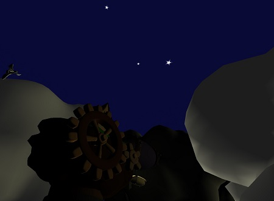

Cloud Factory
Finished in May 2015
Reason to create project:
The project was created for course PGR [3] during my bachelor studies.
About project:
It is my first project in C++ and OpenGL. During the creation of this project I was learning how to code in C++ so it is not perfect and there are things which could have been done better, but I am proud of it.
The project uses PGR framework which was provided to students. The framework contains libraries such as FreeGlut, Assimp or GLM and also PGR library.
PGR library is used mainly to create shaders (shortens the sequence of steps from glCreateShader to glCompileShader and error checking to one method) and programs (creation of the program and attaching shaders), loading of textures,...
More information about PGR framework: https://cent.felk.cvut.cz/courses/PGR/framework/doc/
Project was created to show things learnt during the course:
- implementation and use of basic fragment and vertex shaders
- basic movement in the scene
- transformations of camera/objects
- model, view, projection matrices
- scene graph
- Phong lighting model
- Gouraud shading
- spot, directional light
- object texturing
- mapping of texture (texture slides across object over time - Cloud plane)
- mapping of texture (mapping frames from one texture to object - Twinkling stars)
- skybox
- curve evaluation (segments made of Catmull-Rom splines)
- Selection of objects using id and stencil buffer
- exponential fog
Project:
link to project
Controls:
manual
Resources:
All models used in project were reused from older project (Cloud Factory) I created (It was for course KMA[2] in 2014)
[2] KMA (Kurz multimediálních aplikací - Multimedia Applications Course) - http://leyfi.felk.cvut.cz/courses/kma/ (course was about modelling in Maya)
[3] PGR (Programování grafiky - Computer Graphics) - https://cent.felk.cvut.cz/courses/PGR/
Screenshots:
